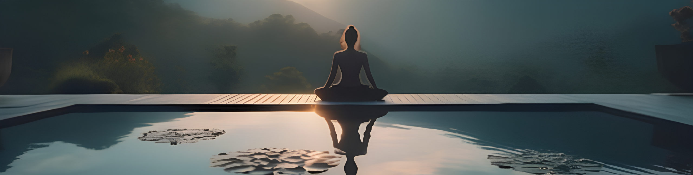
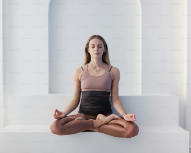

Welcome to HealthyU, your ultimate destination for all things health and wellness!
At HealthyU, we believe that everyone has the right to live a healthy and fulfilling life. Our mission is to provide you with the knowledge, tools and inspiration you need to achieve your health and fitness goals. Whether you're looking to improve your diet, find a new exercise routine, or manage stress, we've got you covered.
Our Story
HealthyU was founded by a group of health enthusiasts who wanted to create a reliable and comprehensive resource for people looking to improve their well-being. We've noticed that while there is a wealth of information available online, it can be overwhelming and often conflicting. That's why we decided to create HealthyU - a place where you can find trusted, evidence-based information, all in one place.
Why Choose HealthyU?
Holistic Wellness Program: We offer a variety of activities designed to harmonize with Yogyakarta's natural beauty and cultural heritage, including meditation sessions, invigorating Zumba classes, and comprehensive cardio workouts.
Tranquil Environment: Nestled amidst the serene landscape of Yogyakarta, our facility provides the perfect atmosphere for relaxation and healing. The peaceful atmosphere and beautiful views enhance your wellness journey.
Our Service
Meditation: Guided meditation sessions to help you find inner peace and mental clarity.
Zumba: An energetic and fun Zumba class that promotes fitness and fun.
Cardio Activities: A comprehensive cardio program designed to improve cardiovascular health and overall fitness.

Our Commitment
At HealthyU, your health and happiness are our top priority. We are committed to creating a supportive environment where you can rediscover balance and contentment. Let the spirit of Yogyakarta inspire you towards a more balanced a nd fulfilled life.